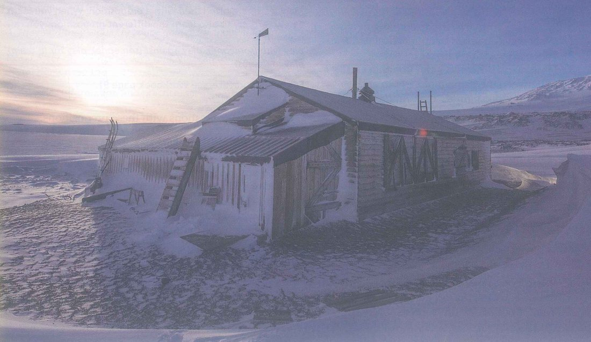
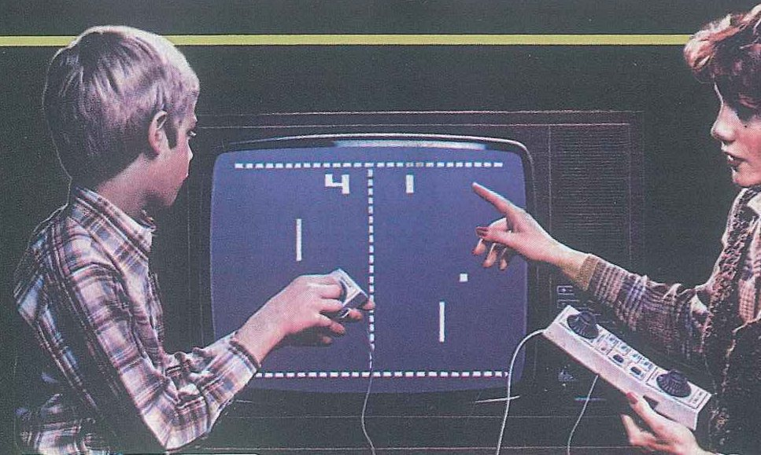
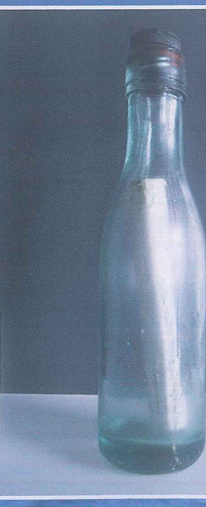
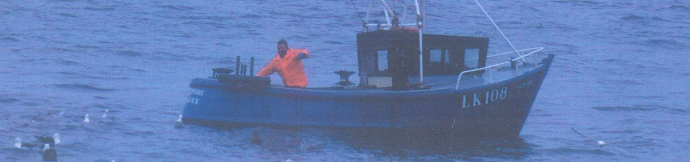

Mục tiêu bài học & khởi động
Mục tiêu bài học
Sau bài học, học viên có thể:
- dùng từ và cụm từ của 4 nhóm: trò chơi điện tử, động từ + giới từ, giao tiếp, lịch sử;
- thuật lại lời người khác: lùi thì, đổi đại từ và các từ chỉ thời gian, nơi chốn;
- chọn đúng say hay tell, tránh lỗi said me hoặc told to me;
- nhận biết các hình thức giao tiếp khác nhau, cả cá nhân lẫn công cộng.
- đọc một dòng thời gian và một bài viết về cuốn sách phẫu thuật cổ nhất để tìm chi tiết, quy chiếu và suy luận;
- nghe các bài nghe trong giáo trình, tin nhắn, hội thoại và bài nói để nắm thông tin chính;
- nói 2 phút về một trò chơi được ưa chuộng, một sự kiện lịch sử hoặc một địa danh lịch sử, và thuật lại lời bạn cùng cặp;
- viết một đoạn văn học thuật theo từng bước: topic sentence, supporting sentences, concluding sentence.
- tò mò tìm hiểu lịch sử và cách con người liên lạc với nhau ngày xưa;
- trân trọng nhiều cách giao tiếp khác nhau, từ tấm thiệp viết tay đến tin nhắn điện thoại;
- chỉ dùng tiếng Anh trong hoạt động nói và thuật lại chính xác ý kiến của bạn cùng lớp.
Lead-in 1 · Ảnh xưa: mô tả và nêu cảm nghĩ

- Câu 1"The hut is about one hundred years old. Where do you think it is?"
- Câu 2"What do you think Captain Scott did?"
- Câu 3"Why do you think people want to look after the hut today?"

- Câu 1"What can you see in the photo?"
- Câu 2"When do you think it was taken?"
- Câu 3"How many differences can you think of between this game and modern video games?"

- Câu 1"Who do you think wrote the message in this bottle?"
- Câu 2"What do you think the message says?"
- Câu 3"Would you ever send a message in a bottle? Why or why not?"

- Câu 1"Where is this boat, and what is the man doing?"
- Câu 2"What unusual things do you think fishermen find in their nets?"
- Câu 3"How would you feel if you found a message that was a hundred years old?"
Lead-in 2 · Nghe · Track 86 · Căn chòi của thuyền trưởng Scott, một “hộp thời gian”
Nghe nhà sử học nói về căn chòi và trả lời câu hỏi (SB tr. 129 Ex 2)
ChọnJust over one hundred years ago, the British explorer Captain Robert Falcon Scott died with his team of men in the snow and ice of Antarctica. He had reached the South Pole, but never returned to this hut, which was the starting point for his expedition. Now the hut is falling down under the snow, and we would like to save it – not just because of its connection to Scott, though this of course is important. Actually, we are more interested in what you find inside the hut. Because of the freezing temperatures in this part of the world, the hut has become a time capsule. There are items of food, such as butter, biscuits and tins of meat, which are one hundred years old. The ice has preserved them all. There are even some of Scott's old possessions and equipment, and things like soap and medicine bottles. When you go inside the hut, it's almost as if he has only just left it. I think we need to look after it because it tells us so much about Scott, but also about our own past.
- “items of food, such as butter, biscuits and tins of meat … possessions and equipment, and things like soap and medicine bottles”
- “it tells us so much about Scott, but also about our own past”
- “it's almost as if he has only just left it” → suốt một trăm năm, mọi thứ vẫn còn nguyên như cũ
Làm việc theo nhóm. Hộp thời gian của nhóm sẽ được chôn dưới đất để các nhà sử học tương lai tìm thấy. Chọn năm đồ vật, lấy trong danh sách hoặc theo ý của nhóm, rồi thống nhất lý do chọn.
- We chose … because it shows how people … today.
- Future historians will be able to see …
- We didn't choose … because it will go bad / it won't last.
- Our group agreed on … , but Minh said that …
Lead-in 3 · Bạn biết bao nhiêu từ cho mỗi nhóm trong 4 nhóm?
Which words do you know for games, devices and playing?
Which verbs do you know that go with with, for, on, about or to?
In how many ways can you send a message to one person, or to lots of people?
Which words do you need to talk about history, historical places and events?